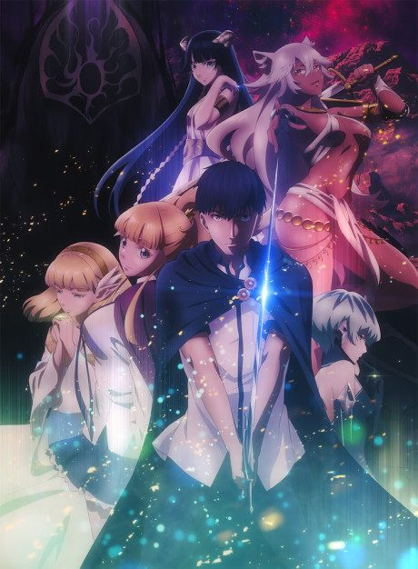
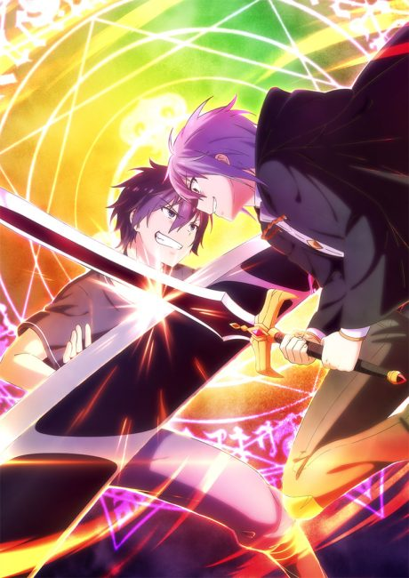

Tales of Wedding Rings
結婚指輪物語
The anime takes the story to Not checked.
5.9AniList score
—Animeter, no votes yet
25episodes, 2 seasons
Is it worth pushing through?
Built from what visitors report across all 2 seasons (25 episodes).
Loading reports…Checking what other people said about this one.
Sign in above with your email to add your report.
More like Tales of Wedding Rings

Not checked5.5 Not checked6.8
Not checked6.8
 Novel8.2
Novel8.2
 Manga Vol. 47.7
Manga Vol. 47.7
 Manga Vol. 67.2
Manga Vol. 67.2
 Not checked6.6
Not checked6.6